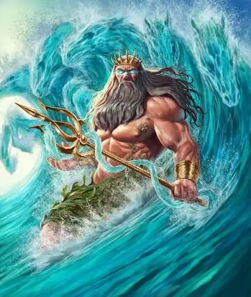
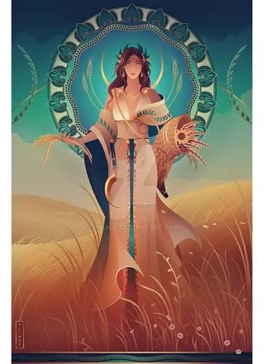
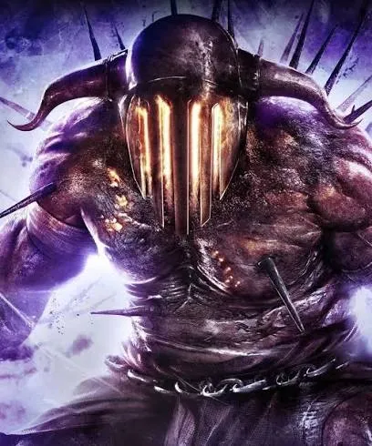
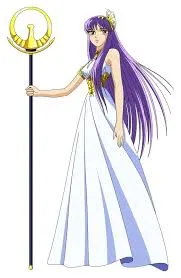
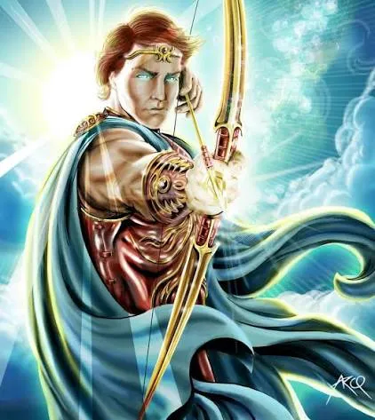
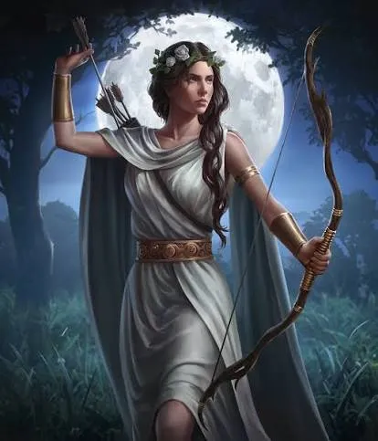
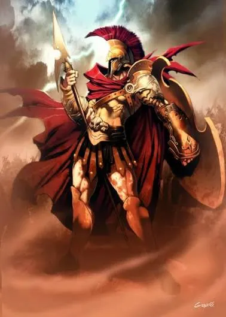
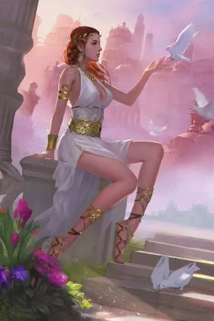
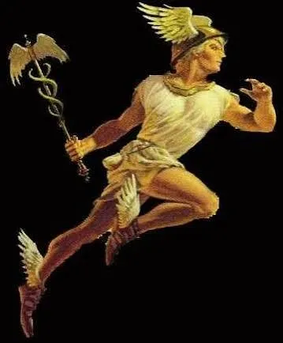

O Monte Olimpo
Segundo a mitologia, os deuses olímpicos habitavam o topo do Monte Olimpo, de onde observavam e interferiam na vida dos mortais. Eram imortais, mas tinham emoções e defeitos muito humanos.
Os Principais Deuses Gregos
-
Zeus: deus do céu e dos trovões, rei dos deuses.
-
Hera: deusa do casamento e rainha do Olimpo.
-
Poseidon: deus dos mares e dos terremotos.

-
Deméter: deusa da agricultura e das colheitas.

- Héstia: deusa do lar e da lareira sagrada.
-
Hades: deus do submundo e guardião dos mortos.

-
Atena: deusa da sabedoria e da guerra estratégica.

-
Apolo: deus da luz, da música e da profecia.

-
Ártemis: deusa da caça e da lua.

-
Ares: deus da guerra violenta.

-
Afrodite: deusa do amor e da beleza.

- Hefesto: deus do fogo e da metalurgia.
-
Hermes: mensageiro dos deuses e protetor dos viajantes.

Deuses e mortais
Os deuses gregos eram cultuados em templos e festivais. Muitas histórias mostram suas relações com os humanos — nem sempre amigáveis — e serviam para explicar costumes, castigos e recompensas. Conheça também os livros sobre mitologia grega.